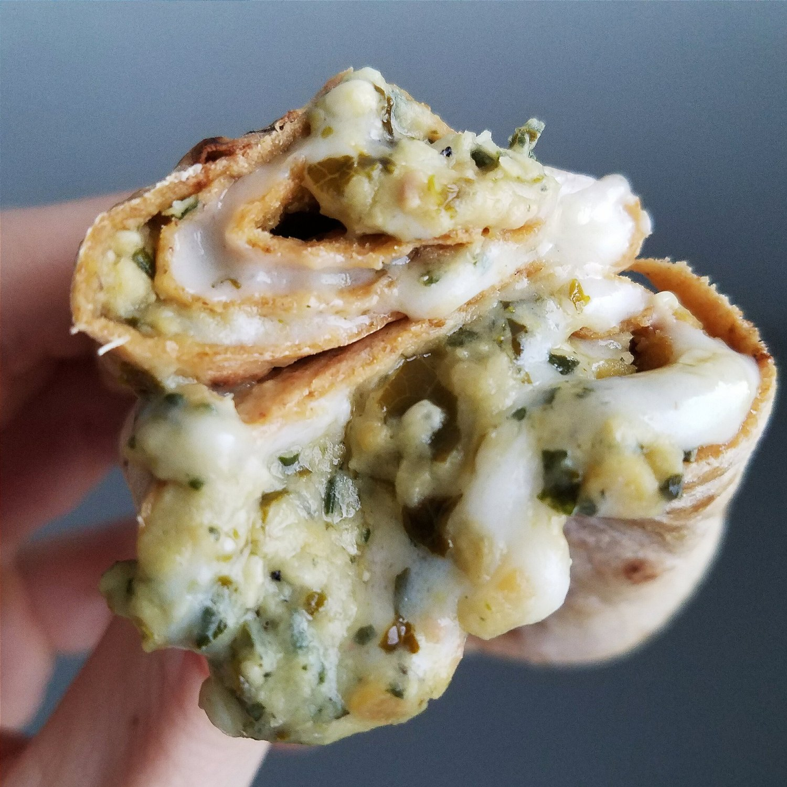

Vegan Cheezy Pesto Wrap

The simplest, creamiest, cheezy pesto wrap you'll ever experience. And believe it or not, this recipe is fully vegan and dairy free! In under 3 minutes, you can experience a deliciously healthy lunch, dinner, or snack!
Most of my meals lately have been quickkkk food or just bars, etc. Lots of oatmeal, bananas, and wraps haha. Wanna know the culprit for that? Pokemon Go. Yep...it's taken over my life. Who hasn't fallen victim to it?! I visited my mom this weekend and convinced her to get it. Not sure that she'll get completely consumed by it like I have...but she's trying it!
But seriously...90% of my actions are driven by the thought of..."but can I catch pokemon in the process?" I went home to see my mom partially because I wanted to travel and see if the types of pokemon I could find would be different ._. yep. I also heard there's a really cool park here that is crazy packed with lures at night. I checked it out, and the rumors are true. I wish I could go here every day!! But I've spent a lot of time there this weekend and it was so worth it. Just spending 2 hours there, I was able to level up from 16 to 17. I went the next day, spent 2 hours there, and leveled again. Purely by the mass amount of pokestops with lures. You don't even have to walk anywhere since they intersect.
Anywhooo.. That's my life. I really see nothing wrong with it. I've met so many cool people! And Pesto is getting a LOT of walking. I'm usually really bad about walking him :( so I'm glad now that he's been consistently tired. That means he's a happy pup. :) I've also gotten a lot of walking in, and you can't argue with getting people active! There's been a bad rep on news sources, but basically - don't be stupid. Don't go down alleys. Don't walk alone at night. Be smart. It's not that hard. Have fun and socialize.
When you get sucked in like me, find quick meals to eat! Like this vegan cheezy pesto wrap. I promise you won't be let down! I totally understand that some of these ingredients are very brand-specific. For the tortilla wrap, use whatever you prefer! If gluten free, find a gluten free wrap. And if you can't find this hummus, use a vegan pesto. A lot of pesto in stores has dairy in it, so be careful! For the provolone cheese, though, I only recommend Daiya for vegan cheese. All other brands are subpar. I think Go Veggie would be second best...? But still not the same. I hope you can find the Daiya and make this!!I wasn't even a cheese fan. As a little kid, sure, yeah. I ate boxes on boxes on boxes of mac and cheese. But as I got older into high school and college, cheese always just made me feel "meh, no opinion." So going vegan, I never miss it. But after trying this...wow. So creamy; I think I was converted to be a "cheese person" haaaa.
Try out this vegan cheezy pesto wrap, and let me know what you think! It's made in under 3 minutes and will leave you feeling absolutely delightful.
Vegan Cheezy Pesto Wrap
Serves: 1
-
1 flatout tortilla wrap (or preferred wrap)
-
2 slices vegan provolone cheese (Daiya brand)
-
3-4 TBSP kale pesto hummus (Hope Foods brand)
-
Warm the wrap in the microwave for 15-20 seconds. Use discretion here because every different type of wrap will heat differently - you don't want to overheat it and make it mushy! Just get a light warmth.
-
Place the cheese slices on the warm wrap; it may help to break up the slices into 2 or 3 pieces to evenly lay it down on the wrap. The cheese should melt from the warm wrap, but if not, microwave an extra 5-15 seconds and watch closely until it lightly melts but doesn't bubble.
-
Once melted, spread on the pesto hummus. If you can't find this hummus (I got it from Whole Foods), use any other vegan pesto you can find!
-
Wrap up, and enjoy!!!